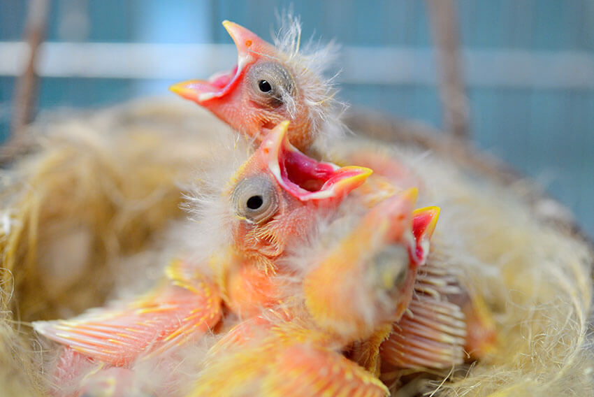
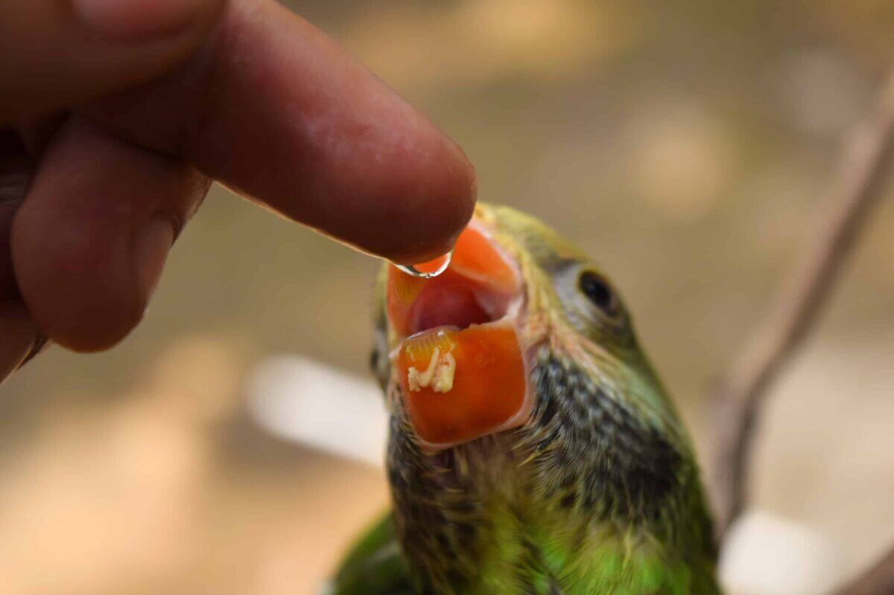
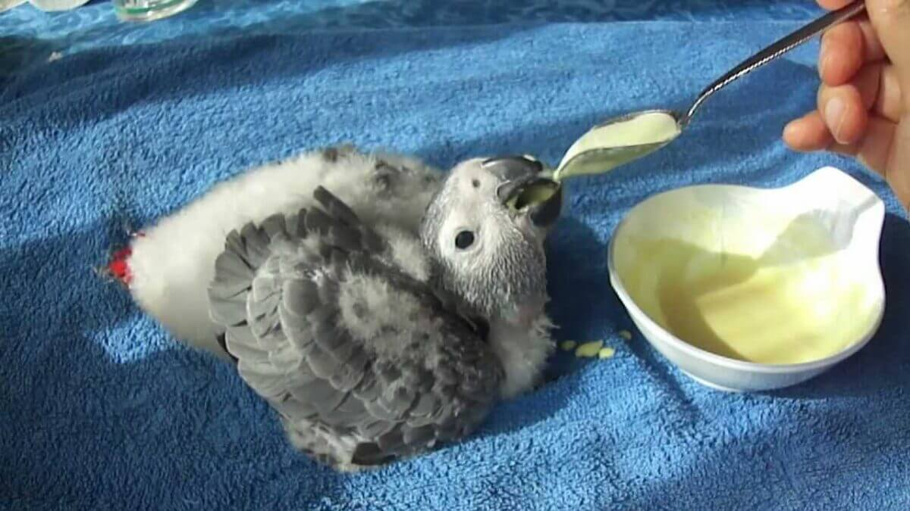
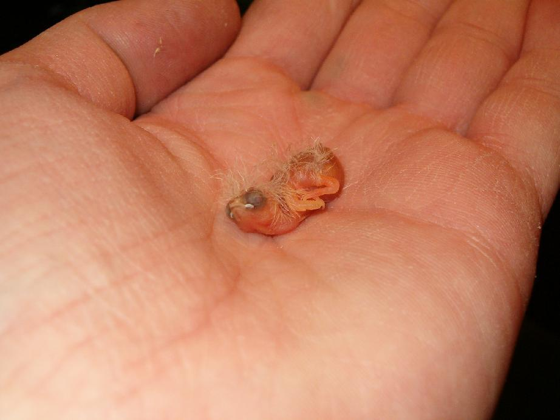

خیلی ازمون سوال پرسیده میشه که سرلاک پرنده چیست؟ و یا چطوری سرلاک به جوجمون چی بدیم، چجوری و با چی بدیم و چگونه سرلاک پرنده درست کنیم. اگه شما هم این سوالارو دارین خیالت راحت، ما این راهو بلدیم! تو این مقاله قراره اطلاعاتی که از سرلاک مخصوص پرنده نیاز دارین رو بهتون بدیم پس حتما باهامون همراه باشین.
سرلاک پرنده چیست؟
سرلاک پرنده (Baby bird handfeeding formula) درواقع یه محصول تجاری هست که براساس نیازهای جوجهها اون رو از مواد مغذی فرموله کردن تا خوب رشد کنه و به راحتی میشه به شکل خمیری و مایع دراختیارشون گذاشت؛ درست مثل سرلاک بچه.
کاربردهای سرلاک برای پرنده چیست؟
اصلیترین کاربرد سرلاک موقعی هست که جوجهای بی سرپرست پیدا کردین و میخواین زنده نگهش دارین، والدین جوجه خوب بهش غذا نمیدن یا والدین بهش غذا میدن ولی میخواین برای رشد بهترش و ارتباط گرفتن باهاتون شما هم درکنارشون بهش غذا بدین.
انواع سرلاک پرنده
سرلاک پرنده خارجی
برندهای مختلف خارجی هستن که سرلاک برای پرندهها تولید کردن و معروفتریناشون اگزکت (Exact)، تروپیکن هاگن (Tropican Hagen)، پادوان (Padovan) و راف (Raff) هستن که به ترتیب ساخت کشورای کانادا، آمریکا و ایتالیان که هرکدوم جداگانه بررسی میشن و درنهایت ارزشاشون باهم مقایسه میشه.
سرلاک اگزکت (Exact) یا کایتی (Kaytee)
- سرلاک پرندهی اگزکت از اولین سرلاکهای آمادهای هست که سریع هم درست میشه.
- مزایایی که این سرلاک ساخت کانادا داره داشتن پروبیوتیک هست. (باسیلوس لیکن فورمیس و سوبتیلیس)
- این سرلاک مخصوص هردوی جوجههای طوطیسانان (Psittaciformes) و نرم منقاران (Passeriformes) مثل فنچ و قناری هست.
- در این سرلاک بادوم زمینی و مغزیجات وجود داره بنابراین اگه پرندتون بهشون حساسیت داره مراقب باشین.
- سرلاک اگزکت بعد ساختن قابلیت استفاده مجدد نداره.
- توصیه میشه برای جوجههاس تازه متولد شده تا دو روزه، مقادیر کمی سرلاک درست بشه و حتما هم زده بشه تا ترکیب یکنواختی درست شه.
- اگه جوجهی شما بیشتر از ۲ روز سن داره لازمه غلظت سرلاک رو زیاد کنین.
مواد تشکیل دهنده سرلاک پرنده اگزکت
- انواع غلات
- منابع پروتئینی گیاهی و پودر تخم مرغ
- ویتامین و موادمعدنی متنوع
- دانه کتان بهعنوان منبع امگا ۳
- عصاره رزماری و مخمرها
- نگهدارنده شیمیایی اتوکسیکین (Ethoxyquin) و طبیعی ویتامین ای
سرلاک پرنده تروپیکن هاگن (Tropican Hagen)
- این سرلاک ساخت آمریکاست.
- تقریبا مواد تشکیل دهندش مشابه سرلاک پرنده اگزکت هست.
- مواد کلیدی موجود در این سرلاک از مشتقات بادوم زمینی هستن. (مثل چربی و پروتئینایی که استفاده شدن)
- برای ساخت این سرلاک از ۸ غلهی ضروری برای تامین آمینواسیدهای لازم استفاده کردن.
- سرلاک هاگن ویژگی ژلاتینه شدن داره؛ یعنی بعد مخلوط کردن با آب کمی زمان لازم داره تا رطوبت آب داغ رو به خودش بگیره.
- توصیه میشه که با بقیه غذاها و سرلاکا مخلوط نشه چون تعادل مواد مغذیش بهم میریزه.
- جدول مصرفی سرلاک به این صورته:
| سن جوجه (روز) | درصد آب (%) | درصد سرلاک (%) | نسبت ترکیبات |
|---|---|---|---|
| ۰-۲ | ۹۰ | ۱۰ | ۹ قسمت آب ۱ قسمت سرلاک |
| ۳-۷ | ۸۵ | ۱۵ | ۱۷ قسمت آب ۳ قسمت سرلاک |
| ۷-۲۱ | ۸۰ | ۲۰ | ۴ قسمت آب ۱ قسمت سرلاک |
| ۲۱ | ۷۵ | ۲۵ | ۳ قسمت آب ۱ قسمت سرلاک |
سرلاک تروپیکن هاگن رو میشه برای پرندههای لوری به دوشکل مصرف کرد: شکل اول بصورت خشک و بدون آب چون از پرندههایی هستن که اگه رژیمشون تماما مایع باشه اونارو به عفونتای باکتریایی حساس میکنه. دومین شکلش در ترکیب با میوههای قطع شده و غذای اصلیش هست.
مواد تشکیلدهنده سرلاک پرنده هاگن
- انواع غلات خصوصا آرد برنج قهوهای
- کمپلکس ویتامین ب و آ به همراه مواد معدنی متنوع
- روغن کانولا و لسیتین بهعنوان منبع چربی
- پودر دانه آفتابگردان
- دانه کتان (منبع امگا ۳)
- بادام زمینی
این سرلاک برای پرندههایی مثل فنچ، قناری و پرندههای کوچیک (مرغ عشق، طوطی برزیلی، عروس هلندی و …) در مواقع حساس تولیدمثلی، استرس و پرریزی بصورت خشک و بدون آب قابل مصرفه.

سرلاک پرنده پادوان (parrots Baby Pâtée)
- این سرلاک ساخت ایتالیا هست.
- اطلاعات دقیقی از مواد تشکیل دهندش موجود نیست ولی بهطور خلاصه حاوی غلات، شیر و مشتقات آن، عصاره پروتئین گیاهی، روغن و چربی و مواد معدنی و ویتامین هست؛ ترکیبی تقریبا مشابه دو سرلاک قبلی.
- بیشترین قسمت این سرلاک رو (حدود ۴۰-۳۰%) پروتئین تشکیل داده و بعد با روغن و چربی، آمینواسید، ویتامین، فیبر و مواد معدنی تکمیل شده.
قیمت سرلاک پادوان
| بسته بندی (گرم) | حدود قیمت (تومان) |
|---|---|
| ۱۰۰ | ۸۰ |
| ۱۰۰۰ (۱ کیلوگرم) | ۴۵۰ |
مشکلی که سرلاک مخصوص پرنده بر پایه شیر و وشیرخشک داره، احتمال عدم تحمل لاکتوز توسط جوجهها هست. البته درباره همه صدق نمیکنه. بنابراین اگه جوجهی شما بعد مصرف سرلاک بهصورت مداوم مدفوع ابکی و شل نداشت، مشکلی با سرلاک نداره. در تحقیقاتی که روی مرغ انجام شده، اگه شیر بیشتر از ۴% جیره رو تشکیل داده باشه میتونه باعث اسهال و درنهایت مرگ بشه.
سرلاک پرنده راف (Raff Energette)
- این سرلاک هم مثل سرلاک پادوان ساخت ایتالیا هست.
- سرلاک پرنده راف مواد مغذی و انرژی بالای موردنیاز جوجههارو در ۵ هفته اول فراهم میکنه.
- سرلاک راف ۳۰% پروتئین خام داره و باعث میشه برای جوجهها و پرندههای بالغی که تحت هرنوع استرسی هستن کاملا مناسب باشه.
- این سرلاک بین سرلاکهای رقیب بیشترین درصد پروتئین خام رو داره؛ یعنی بیشترین تنوع آمینواسید هم در این سرلاک وجود داره.
- موادتشکیل دهنده سرلاک راف هم مثل پادوان دقیق نوشته نشده ولی بهطور خلاصه حاوی آرد گندم و سویا، شیرخشک، شیر و تخم مرغ به همراه مشتقاتشون، میوه و سایر مواد مشترک بین سرلاکها هست.
قیمت سرلاک راف
| بسته بندی (گرم) | حدود قیمت (تومان) |
|---|---|
| ۲۰۰ | ۵۰ |
| ۵۰۰ | ۱۲۵ |
چرا میزان پروتئین سرلاک برای پرنده اهمیت داره؟ چون هم زیادیش هم کمش برای جوجه مشکل ایجاد میکنن؛ برای مثال برای رشد ایدهآل در عروس هلندی، میزان پروتئین سرلاک عروسهلندی نهایت باید ۲۰% باشه و بیشتر از اون باعث اختلال در رشد و بروز مشکلات رفتاری میشه. (مطلب مرتبط: غذای عروس هلندی)
مقایسه آنالیز موادغذایی سرلاکهای پرنده خارجی
| آنالیز مواد (%) | سرلاک پرنده اگزکت | سرلاک پرنده هاگن تروپیکن | سرلاک پرنده پادوان | سرلاک پرنده راف |
|---|---|---|---|---|
| CP (پروتئین خام) | حداقل ۲۲ | حداقل ۲۱ | حداقل ۲۶ | حداقل ۳۰ |
| Cf (چربی خام) | حداقل ۹ | حداقل ۱۰ | حداقل ۷ | حداقل ۳ |
| CF (فیبر خام) | حداکثر ۵ | حداکثر ۳.۵ | حداکثر ۲.۵ | حداکثر ۱ |
| رطوبت | حداکثر ۱۰ | حداکثر ۹ | حداکثر ۱۲ | حداکثر ۱۲ |
کمبود پروتئین در رژیمغذایی پرنده خودش رو به شکل سرعت کند رشد و ظاهر کروی شکل منقار نشون میده.
چرا میزان چربی سرلاک برای پرنده اهمیت داره؟ چون هر پرنده برای جلوگیری از اختلال در رشدش به میزان مشخصی چربی نیاز داره.
چربی موردنیاز رژیم غذایی جوجهها
| نوع پرنده | میزان چربی موردنیاز (%) |
|---|---|
| جثه بزرگ (ماکا، کاکادو و گونه های بزرگ کانور) | ۱۲-۱۴ |
| جثه کوچک | ۳-۵ |

سرلاک پرنده ایرانی
متاسفانه برای هیچکدوم از سرلاکهای پرنده ایرانی مواد تشکیل دهنده و جدول آنالیز مواد بهطور دقیق توضیح داده نشده و نظرات متفاوتی از تجربه مصرف این سرلاکها دیده شده.
پیشنهاد میکنیم برای تضمین سلامت جوجهتون و این که بعداً دچار کمبود مواد مغذی در بدنش نشه، برای تهیه سرلاکها چه تجاری، چه خانگی از دامپزشک کمک بگیرین و حتی اجازه بدین که اون یه برنامه غذایی متعادل و سالم در اختیارتون بذاره.
چون دامپزشک این کار رو با بررسی وزن و شرایط جسمانی جوجه شما انجام میده و میزان دقیق تکتک مواد رو براتون مشخص میکنه. اینطوری دیگه درست کردن سرلاک خانگی هم همچین کار سختی نیست.
شما میتونین از طریق فرم زیر درخواستتون رو برای تهیه برنامه غذایی اختصاصی جوجه، ثبت کنین.
سرلاک تدی
- مزیتی که این سرلاک پرنده داره این هست که در بستهبندیهاش غیر از خود سرلاک، سرنگ و کرمک مخصوص هم موجود هست
- این سرلاک مخصوص طوطیسانان هست
- تدی حاوی آنزیم جهت بهبود فرایند هضم،فیبر، امگا ۳، انواع کربوهیدرات و چربیهای ضروری به همراه مواد معدنی و تمامی گروه ویتامینی میباشد
پرنده بلو
- این سرلاک هم مخصوص طوطیسانان است
- موادتشکیل دهنده سرلاک بلو: آرد ذرت و برنج، پودر سفیده تخممرغ، آمینواسیدهای ضروری، ویتامینهای آ، د۳، کا، ب۱، ب۲ و ب۱۲، ال- کارنیتین، کولین کلراید، عصاره گیاهی اکیناسه و امگا۳
سرلاک مفید
- این سرلاک حاوی پروتئین و چربی بالا به همراه آنزیم میباشد
- سرلاک پرنده مفید در دو بستهبندی ۲۵۰ و ۵۰۰ گرمی موجود هست
مشاهده قیمت در سایت فروشنده
جدول برنامه غذایی جوجه سرلاکی
| سن جوجه (روز) | وعده غذایی | استراحت شبانه |
|---|---|---|
| ۱-۷ | هر ۱ ساعت | نیاز ندارد |
| ۷-۱۴ | هر ۲ ساعت | ۵ ساعت |
| ۱۴-۲۱ | هر ۴-۳ ساعت | ۶ ساعت |
| ۲۱-۲۸ | هر ۵-۴ ساعت | ۷ ساعت |
| ۲۸-۴۲ | هر ۶-۵ ساعت | ۱۰ ساعت |
| ۵۶ روزگی | هر ۸ ساعت | ۱۰ ساعت |
| بعد از مستقل شدن و شروع دونخواری | دو وعده صبح و عصر |
توصیه میشه جوجه در ۶ روز اول زندگیش، قبل وعده غذاییش مقداری انشور پلاس (Ensure plus) و یک قاشق چایخوری محلول الکترولیت انسانی اینفالیت (Infalyte) برای تقویت بدنش مصرف کنه.
میزان مصرف سرلاک
بسته به اشتها، جثه، سن و عوامل دیگه این مقدار میتونه کمی بالا پایین بشه اما بهصورت کلی و حدودی:
| سن (روز) | میزان مصرف سرلاک |
|---|---|
| ۴ روز اول | ۲۵-۲۸% وزن بدن |
| ۵-۱۲ | ۱۵% وزن بدن (لزوم افزایش ماده خشک و کم کردن آب سرلاک) |
| زمان مستقل شدن | کمتر از ۲۰-۱۵% وزن بدن |
گنجایش حدودی چینهدان جوجهها
| پرنده | گنجایش (میلیلیتر) | پرنده | گنجایش (میلیلیتر) |
|---|---|---|---|
| ماکای بزرگ | ۳۵ | کاسکو | ۵۵ |
| پیونوس | ۳۵ | کانور بزرگ | ۲۴ |
| عروسهلندی | ۱۳ | کانور کوچک (مثل گرینچیک) | ۱۵ |
| طوطیبرزیلی | ۸ | مرغ عشق | ۷ |

سرلاک خانگی برای پرنده
برای خیلیا پیش اومده که سرلاک پرنده مرغوب پیدا نکردن و میخوان خودشون درستش کنن ولی لازمش اینه که مواد رو اصولی باهم ترکیب کنین. در ادامه تعدادی طرز تهیه سرلاک برای پرنده رو بهتون معرفی کردیم:
آموزش ساخت سرلاک پرنده (شماره یک)
این سرلاک برای اکثر طوطیسانان مناسب هست.
اگه هرکدوم از این مواد رو نداشتین، جایگزینی باید براش پیدا کنین که نزدیکترین موادتشکیلدهنده رو بهش داشته باشه.
مواد موردنیاز
| مواد | مقدار | نکات اضافی |
|---|---|---|
| بیسکویت میمون (Monkey chow) | ۶ عدد | این بیسکوئیت پروتئین دار در انواع حیوانات (پرندگان، اکثر پستانداران مثل سگ، سنجاب، گلایدر، جوندگان و ...) مصرف میشه. |
| کره بادام زمینی | ۳ قاشق چایخوری | حتما بافت نرم و صاف بدون تکه بادوم زمینی باشه. |
| سرلاک بچه گربر (Gerber) با طعم جو | ۳ قاشق چایخوری | |
| موز | ۱ عدد | تازه باشه بهتره. |
| سس سیب | ۳ ق.چ.خ. | |
| غذای بچه با طعم ذرت | ۳ ق.چ.خ. | میتونه همون برند گربر هم باشه. |
| غذای بچه با طعم سبزیجات | ۳ ق.چ.خ. | |
| ماست ساده (یا نیم قاشق چایخوری لاکتوباسیلوس اسیدوفیلوس) | ۲ ق.چ.خ. | کمک به رشد باکتری مفید گوارش و جلوگیری از رشد قارچ و مخمر |
موارد جایگزینی که میتونین برای بیسکوئیت میمون که برند خارجی و گرونی هست استفاده کنین شامل: بیسکوئیت و اسنکهای سگ و سایر پستانداران یا محصولات غذایی بیسکوئیت مانند مخصوص بچه هست که یکی از این شرکتها محصولات غذایی بچه گربر هست.
مواد تشکیلدهنده بیسکوئیت میمون
- انواع غلات
- منبع پروتئینی گلوتن ذرت، پودر ماهی و پودر آبپنیر
- تقریبا تمامی ویتامینها به همراه منابع معدنی متنوع
- چربی حیوانی با BHA
- میدلینگ گندم بهعنوان پرکننده (بدون ارزش غذایی)
- پودر مخمر و آلفاآلفا
باز هم تاکید میکنم که اگه جایگزینی قراره استفاده بشه حتما جدول ارزش غذاییش مشابه مادهای که دارین حذف میکنین باشه.
آنالیز موادغذایی بیسکویت میمون
| مواد آنالیزشده | مقدار (%) |
|---|---|
| CP (پروتئین خام) | ۱۵ |
| Cf (چربی خام) | ۵ |
| CF (فیبر خام) | ۶ |
طرز تهیه
- اول از همه بیسکوئیتهارو برای ۲۰ دقیقه در آب خیس میکنین و بعد میپزین (اولویت پخت روی گاز هست بعد ماکروویو)
- بعد از پختنشون بقیه مواد رو باهاش مخلوط میکنین.
- مخلوط کردن تا وقتی که سرلاک حالت نرم و یکنواخت پیدا کنه باید ادامه داشته باشه.
- دمای سرلاک موقعی که قراره به جوجه داده بشه نباید بیشتر از ۴۰ درجه سانتیگراد بشه وگرنه احتمال سوختگی چینه دان وجود داره.

آموزش تهیه سرلاک پرنده (شماره دو)
- این سرلاک بیشتر مناسب طوطیسانان کوچک دانه خوار (طوطیبرزیلی، مرغ عشق، عروسهلندی، گرینچیک و …)، فنچ و قناری هست.
- در این سرلاک از غذای تجاری بر پایه تخم مرغ هم استفاده شده که طبق گفتههای قبلیمون قابل جایگزین شدن هست.
- شرکت CéDé غذاهای مخصوص نرم منقاران خصوصا قناری رو تولید میکنه.
آنالیز موادغذایی غذای تجاری CéDé
| مواد آنالیزشده | مقدار (%) |
|---|---|
| CP (پروتئین خام) | ۱۶ |
| Cf (چربی خام) | ۷.۹ |
| CF (فیبر خام) | ۳ |
| رطوبت | ۱۰ |
مواد موردنیاز
| مواد موردنیاز | مقدار موردنیاز (گرم) | نکات اضافی |
|---|---|---|
| غذای تجاری CéDé | ۵۰ | میتونین هر غذای دستی تجاری مناسب دیگه رو جایگزینش کنین. |
| آرد سویا | ۵۰ | برای جوجههای کانور میتونین به راحتی ۲۵ گرم آرد سویا رو با ۲۰ گرم پروتئین سیب زمینی جایگزین کنین. |
| روغن (سویا، ذرت یا گندم) | ۱۲ | |
| کلسیم فسفات | ۴ | |
| کلسیم کربنات | ۱ | |
| مکمل ویتامین و موادمعدنی | ۲ |
اولین غذا برای جوجهای که تازه از تخم دراومده(بعد از اینکه در عرض چندساعت کامل خشک شد)، چندقطره آبی که قبلا جوشانده و خنک شده به همراه نسبت برابری از محلول الکترولیت انشور پلاس (Ensure plus) هست. جوجهی پرندههای بزرگتر(ماکا، کاسکو، آمازون، کاکادو و …) نهایت ۱ سیسی و جوجهی پرندههای کوچیکتر نهایت ۰.۲-۰.۱ سیسی میخورن.

نظر شما درباره سرلاک مخصوص پرنده چیست؟
ما در این مقاله توضیح دادیم که سرلاک پرنده چیست؟ و سعی کردیم انواع سرلاک پرنده از برندهای خارجی و ایرانی معروف رو به همراه طرز تهیه دو نوع سرلاک خونگی توضیح بدیم. نظر شما درمورد این سرلاکها چیه؟ اگه سرلاک خونگی درست کردین چه مواد جایگزینی رو انتخاب کردین؟ ممنون میشیم نظراتتون رو با ما به اشتراک بذارین.
سلام
خیلی مممنننوونن
مطالب سایتتون عالیی
سلام ارمیا جان، ممنون از کامننتون